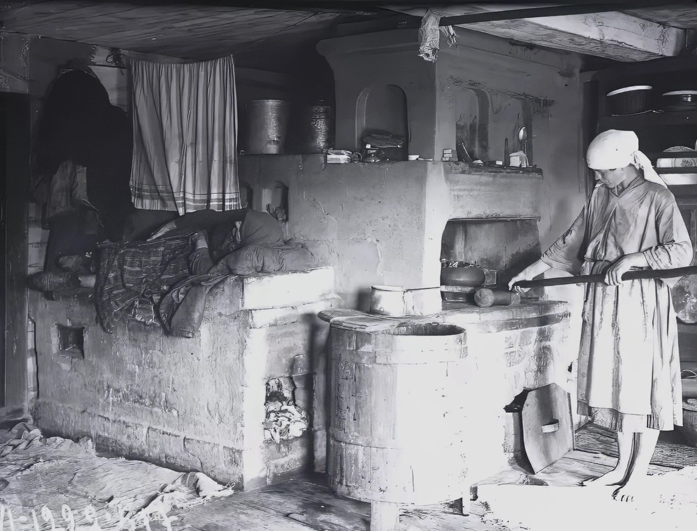

Кухня в доме старшего брата отца, который работал на местном стеклозаводе мастером по производству листового стекла.
В 1960 году в собственном доме дяди Пети с печью, как на фото выше, которое я нашёл в интернете, жила и моя бабушка Наталья.
Тётя Таня не работала по найму и целый день крутилась по дому, возле печи, коровы, свиньи, кур и в огороде, подавая на стол еду в определённое время.
В доме было четверо детей из шести, которых родила тётя.
Младший ребёнок, мой ровесник, умер после падения с печи в 6 месячном возрасте, старшая дочь закончила педагогический институт, вышла замуж и жила отдельно с мужем в крохотном полудоме, работая учителем русского языка и литературы в местной школе.
Все, кроме меня, работали, но в доме, по нынешнем меркам, была аккуратная нищета. Мне нравилось жить в их доме и гулять по лесу, который начинался сразу за домом.
Моя бабушка Наталья через 10 лет умрёт зимой 1970 года примерно в том же состоянии, что и на фото.
Два её сына и две крепкие дочери не смогли создать своей маме, вдове лесника и воина приличные условия в конце её 80 летней жизни.
Почему так произошло? Наверно это вопрос можно было бы адресовать так называемой советской власти и её ядру - большевикам. Но они, оседлав Росссийскую империю, трансформировали её в ходе кровавой гражданской войны в СССР, разорили традиции и в конец развалив уклад народа в 1991 году вместе с мифом о братстве пролетариев всех стран исчезли с исторической арены.
Собрать Россию на развалинах СССР не просто, а самое главное, никто не видит её историческое русло.